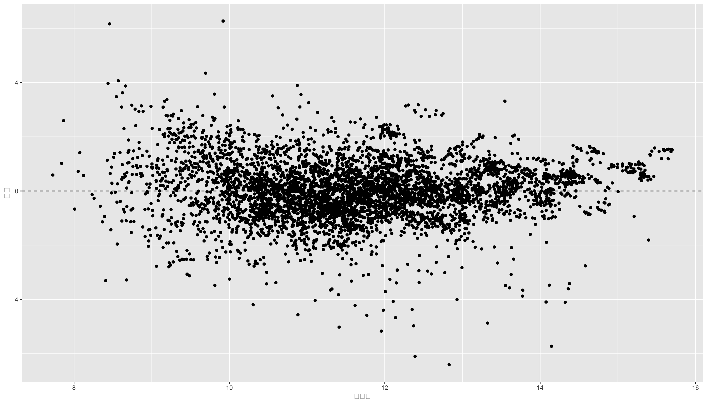
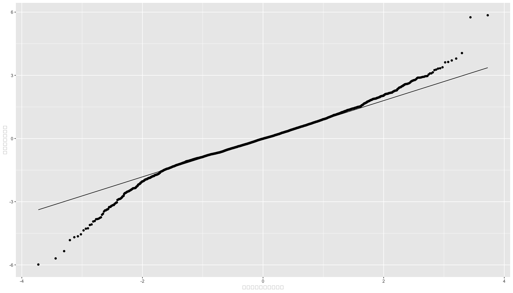

df <- read_csv("data/adv_2023.csv") %>%
filter(決算月数 == 12)
fit <- lm(log(売上高) ~ log(lag(研究開発費)) + log(lag(広告宣伝費)), data = df)12 回帰分析の前提と妥当性の診断
回帰分析は非常に有用な分析手法ですが、無条件に利用できるわけではなく、分析結果が意味をもつためには、いくつかの前提条件が満たされている必要があります。 この章では、その前提条件が満たされているかどうか、つまり回帰モデルによる統計的推定が妥当かどうかを診断する手法を学習します。 とりわけ，本章では線形回帰モデルのみを扱います。 非線形回帰モデルの妥当性も重要ですが，難しいのでここでは扱いません。
12.1 回帰分析の前提
- Section 12.1.1 モデルが妥当
- Section 12.1.2 加法制と線形性
- Section 12.1.3 誤差の独立性
- Section 12.1.4 誤差が欽一分散
- Section 12.1.5 誤差が正規分布
12.1.1 回帰モデルの妥当性
回帰モデルが妥当であるためには、独立変数から応答変数への因果関係をみるのに有用な推定を行えているのかどうか、ということが重要となります。 この妥当性を内的妥当性 (internal validity)といいます。 ここでは、内的妥当性について考えます。
内的妥当性が失われる5つの要因を以下に示します。
- 欠落変数 (omitted variable)
- 関数系の誤り (misspecification)
- 説明変数の測定誤差 (measurement error)
- サンプルセレクション (sample selection)
- 同時性 (simultaneous causality)
回帰分析で因果関係を適切に推定するためには，異常の要因をコントロールする必要があります。
12.1.1.1 欠落変数
欠落変数とは、応答変数に影響を与える変数を回帰モデルに加えていないときに生じる問題です。 欠落変数があると，内生性(\mathrm{Cov}(X_i, u_i) \not = 0)の問題が生じ，推定量の不偏性が失われてしまいます。 以下でこの問題を確認してみましょう。
真の回帰モデルが以下のものであったとしましょう。 Y_i = \alpha + \beta X_i + \theta Z_i + u_i
ここで変数Zが観察されないため，Zを回帰モデルに加えずに，Xで単回帰分析をした場合，
\begin{aligned} Y_i &= \alpha + \beta X_i + u_i\\ u_i &= \theta Z_i + v_i \end{aligned}
この欠落変数の問題は、不要な変数を加えたことにより生じる問題よりも深刻なので、実際には少しでも必要と思われる変数は加えるようにしましょう。
12.1.2 加法性と線形性
線形回帰モデルは、核説明変数の線形関数で表される。
y = \beta _1 x_1 + \beta_2 x_2 + \cdots + \beta_k x_k
加法性が満たされないモデルには、
y = x_1 \times x_2 \times x_3
のようなモデルがあり、線形関数ではなくなっています。 しかし両辺の対数をとると、
\log y = \log x_1 + \log x_2 + \log x_3
と線形関数になり、最小二乗法による推定が可能となります。 分析手法を開発してきた計量経済学では，いかにこの線形回帰に帰着できるかが重要なテーマとなっています。線形回帰にさえ持ち込めば，シンプルかつ強力な最小二乗法OLSが使えるからです。
12.1.3 誤差の独立性
固体iとjの誤差u_iとu_jが独立であるとは、\mathrm{Cov}(u_i, u_j) = 0である、ということです。 誤差項間に相関があると、推定量の不偏性が失われてしまい、内的妥当性が失われてしまいます。
12.1.4 誤差の分散均一性
誤差の分散均一性とは、誤差の分散が説明変数に依存しないということです 説明変数の値が大きくなればなるほど、応答変数のばらつきが大きくなる場合、分散不均一であるといいます。 たとえば、企業規模が大きくなればなるほど、売上高や利益、収益性といった尺度のばらつきも大きくなることが多いです。 誤差の分散が不均一だと最小二乗法による推定量は最小分散ではなくなるものの、 不偏推定量が得られるため、内的妥当性は失われません。
12.1.5 誤差の正規性
誤差項が正規分布に従うとき、最小二乗法による推定量は最小分散不偏推定量となるため、誤差が正規分布にしたがっているかどうかは重要です。 全ての固体iについて、\varepsilon_{i} \sim N(0, \sigma^2)となっていることが重要ですが、 中心極限定理(central limit theorem)により、nが十分大きければ、\varepsilon_{i}は正規分布に従うとみなすことができるため、回帰直線の推定ではこの仮定はあまり気にしなくてよいです。
12.2 Rによる回帰診断
回帰分析が適切に行えているかどうかをチェックすることを回帰診断(regression diagnostics)といいます。 ここでは、誤差の独立性、誤差の分散均一性、誤差の正規性の3つの前提条件をRでチェックする方法を学習します。
12.2.1 残差プロットによる診断
この回帰分析の結果を代入したfitから、残差residualsと予測値fitted.valuesを取り出します。
res_plt <- tibble(
res = fit$residuals,
fitted = fit$fitted.values
) %>%
ggplot(aes(x = fitted, y = res)) + geom_point() +
geom_hline(yintercept = 0, linetype = "dashed") +
xlab("予測値") + ylab("残差")
print(res_plt)
この残差のグラフを残差プロット(residual plot)といいます。 残差プロットから、何らかの法則性が見られる場合、誤差の独立性が満たされていない可能性があります。 また残差プロットのばらつきが、予測値の大きさによって変化している場合、誤差の分散均一性が満たされていない可能性があります。 しかし上の図からはどちらも見られないため、残差の独立性は満たされていると考えられます。
12.2.2 正規QQプロットによる診断
正規QQプロット(normal quantile-quantile plot)は、正規分布に従う確率変数の分布を確認するためのグラフです。 正規QQプロットは、横軸に標準正規分布の分位数を、縦軸にデータの分位数をとったグラフで、データが正規分布に従っている場合は、点が直線上に並ぶことになります。
便利なことに、ggplot2パッケージには、正規QQプロットを描くための関数geom_qq()が用意されています。 早速使ってみましょう。 ggplot()関数は引数にデータフレームしか受け付けないので、回帰残差fit$residualsを正規化してからデータフレームに変換してggplot()関数に渡します。
resid <- fit$residuals
df <- tibble(
z_resid = (resid - mean(resid)) / sd(resid)
)
qqplt <- ggplot(df, aes(sample = z_resid)) + geom_qq() +
geom_qq_line() + xlab("標準正規分布の分位数") + ylab("データの分位数")
print(qqplt)
標準正規QQプロットをみると、データが正規分布に従っていると言えなくもないですが、微妙なところだと思います。 回帰分析の推定結果である残差が正規分布にしたがっているので、誤差項が正規分布にしたがっている、と仮定することは妥当であると言えます。